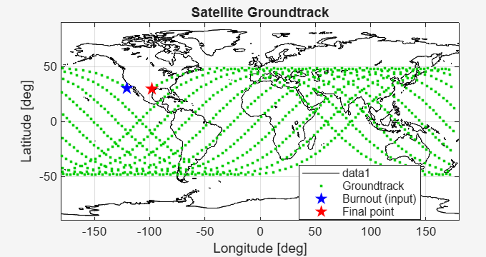
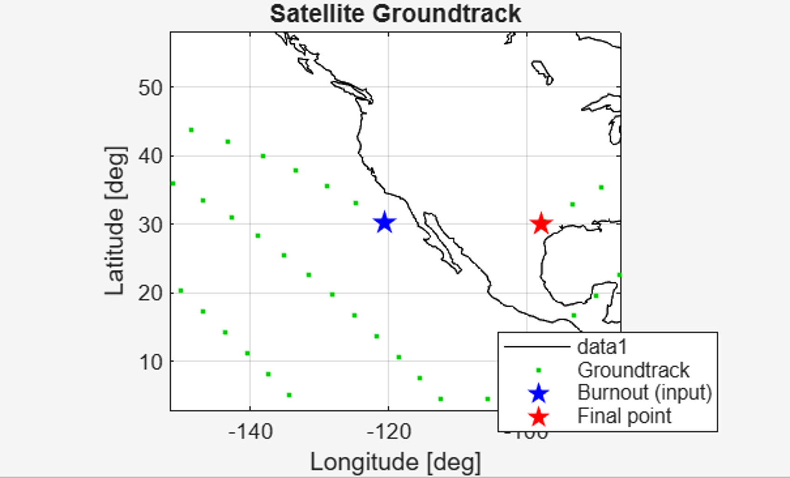
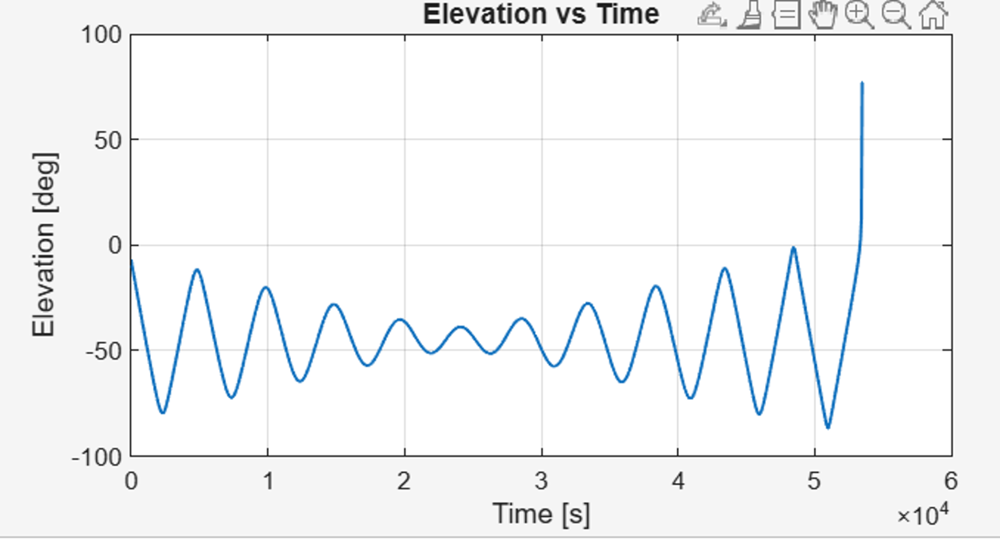

ASTRODYNAMICS
Spacecraft Dynamics
Orbital targeting, ground track generation, and perturbation modeling for a target overflight mission.
Overview
This project focused on building an orbital targeting and validation pipeline for a spacecraft ground target overflight mission. The goal was to generate an orbit that would pass over a specified ground target after a given number of revolutions, then verify the result using numerical propagation and ground track analysis.
I implemented the Skopinski-Johnson targeting algorithm in MATLAB and connected the targeting solution to a full simulation workflow involving orbital element generation, inertial state conversion, Earth rotation, J2 perturbation modeling, and latitude-longitude ground track visualization.
Engineering Objective
The main objective was to determine whether an initial orbital solution could be generated from mission-level constraints and then validated against a desired target location on Earth. Rather than only computing orbital elements, the project required checking whether the propagated spacecraft trajectory actually produced the intended ground track after multiple revolutions.
This made the project a complete targeting problem: define the mission inputs, solve for the orbit, propagate the spacecraft motion, map the result onto the rotating Earth, and compare the final pass against the desired target.
Targeting Workflow
The project began with a desired target location, an initial burnout location, a selected semimajor axis and eccentricity, and a specified number of orbital revolutions. These inputs were used to generate a targeted orbital solution. I then converted the resulting orbital elements into Earth-Centered Inertial position and velocity vectors for propagation.
After propagation, the inertial spacecraft states were transformed into latitude and longitude coordinates by accounting for Earth rotation. The resulting ground track was then compared against the target location to determine whether the final pass successfully reached the desired region.
Simulation Pipeline
Mission inputs → Skopinski-Johnson targeting → orbital elements → ECI position and velocity → J2 orbit propagation → Earth-fixed ground track → target overflight validation
What I Worked On
- Implemented the Skopinski-Johnson targeting algorithm in MATLAB.
- Generated orbital elements from launch conditions, target location, and mission constraints.
- Converted orbital elements into Earth-Centered Inertial position and velocity state vectors.
- Propagated the orbit over multiple revolutions while accounting for J2 perturbation effects.
- Converted propagated spacecraft states into latitude and longitude ground tracks.
- Compared the final ground track location against the desired target location.
- Used elevation angle analysis as an additional validation check for the target pass geometry.
Technical Highlights
- Connected analytical orbital targeting methods with numerical orbit propagation.
- Included Earth rotation effects to map inertial spacecraft motion to Earth-fixed ground tracks.
- Used J2 perturbation modeling to improve propagation fidelity over multiple revolutions.
- Validated mission success through both ground track visualization and target overflight analysis.
- Used MATLAB to build the full computational pipeline from targeting inputs to final validation plots.
Results & Validation
The targeted orbital solution was propagated and converted into ground track coordinates to verify that the spacecraft passed near the desired Austin target region after the specified number of revolutions. The full ground track shows the overall orbital path, while the zoomed view highlights the final pass near the target location.
Key Result
The targeting solution produced an end ground track at 30.087° latitude and -97.862° longitude, compared to the desired target location of 30.300° latitude and -97.700° longitude. This corresponds to a final targeting error of 0.213° in latitude and 0.162° in longitude.

Full propagated ground track showing how the targeted orbit evolves over multiple revolutions after including Earth rotation and J2 perturbation effects.

Zoomed target-region view showing the final ground track pass near the desired Austin overflight location.
In addition to the latitude-longitude comparison, I used elevation angle analysis to confirm the geometry of the final target pass. The elevation plot provides another way to verify that the spacecraft reached a valid overflight condition near the intended target location.

Elevation angle over time used to validate the final target overflight geometry.
Engineering Takeaways
This project helped me connect orbital mechanics theory with a practical simulation and validation workflow. The most valuable part was seeing how the targeting algorithm, coordinate transformations, perturbation modeling, and visualization steps all had to work together to determine whether the mission objective was actually satisfied.
Instead of stopping at an analytical orbit solution, I used propagation and ground track comparison to check the performance of the targeting method. This made the project feel closer to a real mission analysis task, where the important question is not only whether an orbit can be calculated, but whether it satisfies the operational objective after propagation.
Tools Used
MATLAB, orbital mechanics, numerical simulation, coordinate transformations, J2 perturbation modeling, Earth rotation modeling, ground track analysis, elevation angle analysis